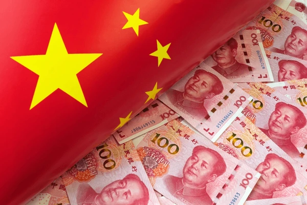

A economia da China é uma das maiores e mais influentes do mundo. Desde as reformas iniciadas nos anos 1970, o país passou de uma economia rural para um grande polo industrial e tecnológico. Seu crescimento foi impulsionado por exportações, investimentos em infraestrutura e forte planejamento governamental. Atualmente, a China busca equilibrar seu desenvolvimento, fortalecendo o consumo interno e investindo em inovação, especialmente em áreas como tecnologia, energia renovável e automóveis elétricos. Apesar de enfrentar desafios — como o envelhecimento populacional e disputas comerciais — o país continua sendo uma potência econômica essencial para o comércio e para os mercados globais.
Outro destaque do cenário econômico chinês é sua presença no comércio internacional. O país se tornou líder mundial na fabricação de eletrônicos, roupas, máquinas e equipamentos industriais, abastecendo mercados de todos os continentes. Além disso, a China tem ampliado seus investimentos além de suas fronteiras por meio da Iniciativa Cinturão e Rota, que conecta diversas nações por rotas comerciais terrestres e marítimas. Grandes cidades como Xangai, Shenzhen e Guangzhou são verdadeiros centros de inovação, atraindo empresas de tecnologia e startups que impulsionam o desenvolvimento digital. Mesmo diante de períodos de instabilidade global, a capacidade de adaptação da economia chinesa demonstra sua força e influência, consolidando o país como peça-chave no futuro econômico mundial.
